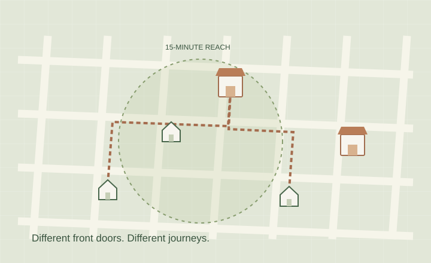
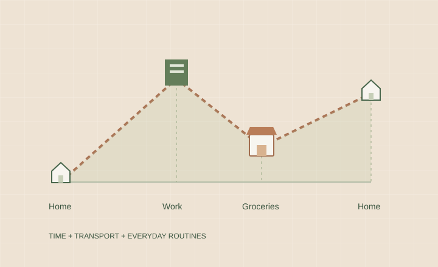
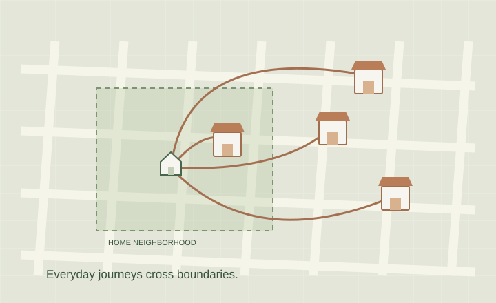
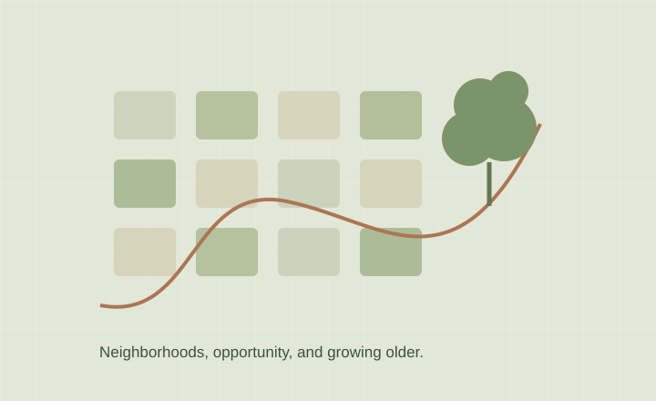
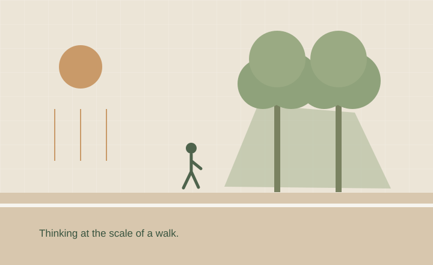
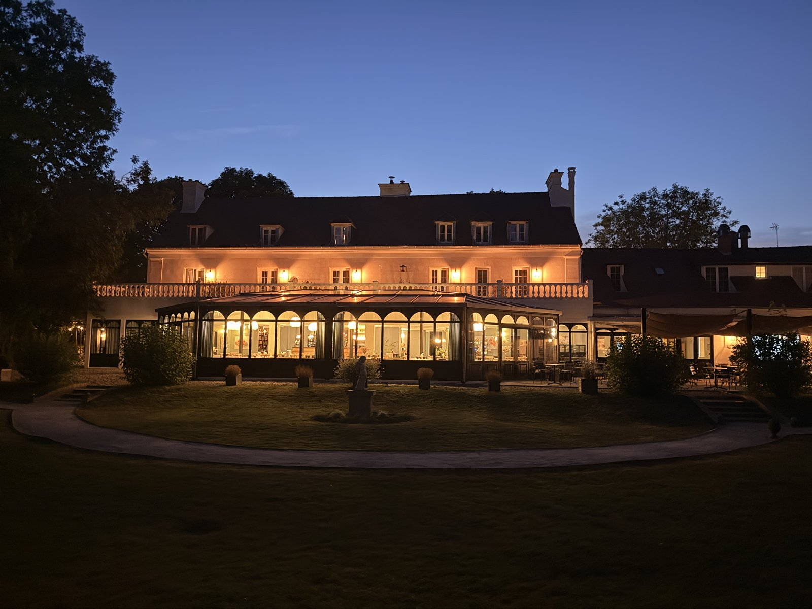
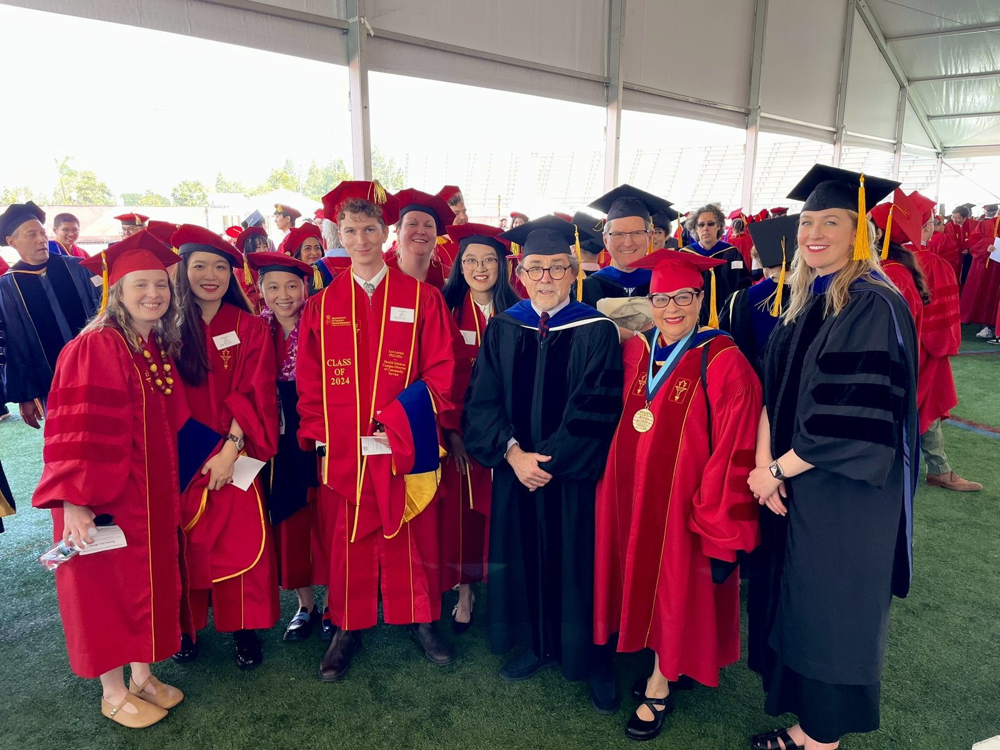
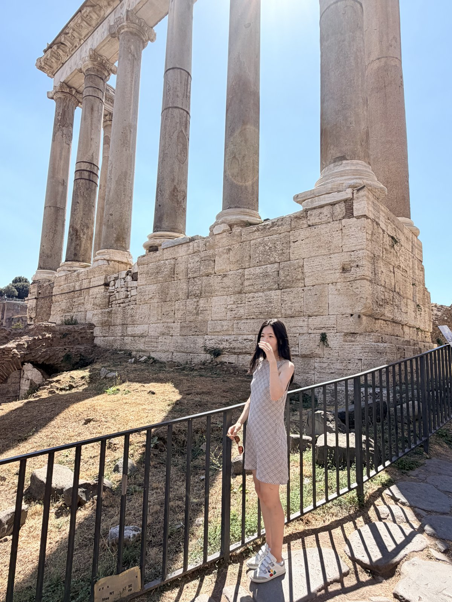

CONCEPT ILLUSTRATIONFOOD ACCESS · CITIES · 2026
A 15-minute city—for whose household?
Looking beyond neighborhood averages to ask what food access looks like from individual front doors.
GEOGRAPHER · RESEARCHER · EDUCATOR
Hi, I’m Mengya.
I study how the places we live, the ways we move, and the spaces we share shape our health—and our everyday lives.
At the University of Southern California · Los Angeles
01 / A LITTLE ABOUT ME
A grocery trip. A walk to the park. The neighborhood we grow older in. These everyday experiences are where my research begins.
I’m a health geographer and spatial epidemiologist, and an instructor at USC’s Spatial Sciences Institute. I bring together GIScience, mobility data, and spatial analysis to understand how our surroundings shape health—and why those opportunities are not shared equally.
My path has taken me from GIS at Wuhan University to a Ph.D. in Population, Health, and Place at USC, followed by postdoctoral work at the Keck School of Medicine. Along the way, my questions have grown from how we measure access to how that knowledge can support healthier communities.
02 / RESEARCH WITH PEOPLE IN MIND
From getting groceries to growing older, I use spatial data to look more closely at the places that shape our lives.

CONCEPT ILLUSTRATIONFOOD ACCESS · CITIES · 2026
Looking beyond neighborhood averages to ask what food access looks like from individual front doors.

CONCEPT ILLUSTRATIONMOBILITY · APPLIED GEOGRAPHY · 2026
A nearby store is only part of the story. Time, transportation, and household routines matter, too.

CONCEPT ILLUSTRATIONEVERYDAY MOBILITY · HEALTH & PLACE · 2024
Following grocery-shopping patterns to see what a map of nearby stores can miss.

CONCEPT ILLUSTRATIONHEALTHY AGING · ONGOING RESEARCH
Exploring neighborhood inequality, environmental exposures, and disparities in dementia and cardiometabolic health.

CONCEPT ILLUSTRATIONGREENSPACE & GEOAI · IN PREPARATION
Connecting a longstanding interest in parks and walkability with new ways to study heat at a pedestrian’s scale.
RESEARCH INTO PRACTICE · COMMUNITY
Collaborative work on Food Base LA and policy reports that connect research with local food-system planning.
Xu, M., Livings, M.S., de la Haye, K., & Wilson, J.P. (2026). Extending the space–time prism for multimodal, household-level accessibility modeling: A GIS-based framework applied to food access in Los Angeles, CA. Applied Geography.192:104054.
Read article ↗Xu, M., de la Haye, K., MacDonald, B., & Wilson, J.P. (2026). Rethinking food access at the household level under the 15-minute city framework. Cities 170,106657.
Read article ↗Xu, M., Wilson, J.P., Bruine de Bruin, W., Lerner, L., Horn, L., A., Livings, M.S., & de la Haye, K (2024). New insights into grocery store visits among East Los Angeles residents. Health & Place 87, 103220.
Read article ↗Livings, M.S., Wilson, J.P., Miller, S., Bruine de Bruin, W., Weber, K., Babboni, M., Xu, M., Li, K., & de la Haye, K. (2023). Spatial characteristics of food insecurity and food access in Los Angeles County during the COVID-19 pandemic. Food Security 15: 1255-1271.
Livings, M.S., Bruine de Bruin, W., Wilson, J.P., Lee, B. Y., Xu, M., Frazzini, A., Chandra, S., Weber, K., Babboni, M., & de la Haye, K. (2023). Food insecurity is under-reported in surveys that ask about the past year. American Journal of Preventive Medicine 65: 657-666.
Su, S., Zhou, H., Xu, M., Ru, H., Wang, W., & Weng, M. (2019). Auditing street walkability and associated social inequalities for planning implications. Journal of Transport Geography. 74: 62-76.
Pi, J., Sun, Y., Xu, M., Su, S., & Weng, M. (2018). Neighborhood social determinants of public health: Analysis of three prevalent non-communicable chronic diseases in Shenzhen, China. Social Indicators Research 135: 683-698.
Xu, M., Xin, J., Su, S., Weng, M., & Cai, Z. (2017). Social inequalities of park accessibility in Shenzhen, China: The role of park quality, transport modes, and hierarchical socioeconomic characteristics. Journal of Transport Geography 62: 38-50.
Su, S., Li, Z., Xu, M., Cai, Z., & Weng, M. (2017). A geo-big data approach to intra-urban food deserts: Transit-varying accessibility, social inequalities, and implications for urban planning. Habitat International 64: 22-40.
For manuscripts under review, work in preparation, and policy reports, see the complete CV. Statuses follow the August 2026 CV.
03 / IN THE CLASSROOM
For me, teaching GIS is a chance to connect spatial thinking with things we can actually build, explore, and share.
This website began as a small Web GIS teaching exercise. That spirit of curiosity still belongs here.
Teaching & mentoring experience ↗Taking maps beyond the desktop: exploring how geographic information becomes part of the web and the devices we use every day.
Building the confidence to move from a spatial question to a working tool through programming and hands-on problem solving.
I also mentor students working across epidemiology, public health, and spatial data science. Let’s connect ↗
04 / NOTES ALONG THE WAY
The communities, conversations, and places that are part of the journey.
COMMUNITY & RECOGNITION · 2026
I received a $2,000 Women in GIS & Esri seed grant for practitioners and academics in geospatial fields—a welcome source of support as I continue this work.
Illustrated photo placeholder

LEARNING & CONNECTION · JUNE 2026
The Environmental and Planetary Health Summer School brought me to Varennes-Jarcy, near Paris. Organized by IMRB and Inserm’s METATOX team, it was another opportunity to think across health and environment.

PEOPLE & GRATITUDE · 2024
Finishing my Ph.D. at USC meant celebrating with the friends, cohort members, and mentors who made those years so meaningful.
05 / THE PATH SO FAR
B.S. in GIS, with a minor in Finance, and M.S. in Cartography & GIS at Wuhan University.
Ph.D. in Population, Health, and Place at USC, advised by John P. Wilson and Kayla de la Haye.
Postdoctoral research at USC’s Keck School of Medicine with Hoda Abdel Magid.
Instructor at USC’s Spatial Sciences Institute, teaching the next generation of GIS practitioners.
GIVING BACK TO THE FIELD
Alongside research and teaching, I contribute through peer review, conference service, and co-editing a special issue on equitable geospatial intelligence.
Service, awards & more ↗06 / AWAY FROM THE DESK
I love traveling. Sometimes a sense of place starts with a new street, a beautiful building, or a little time by the ocean.

LET’S CONNECT
Interested in health geography, spatial data, or teaching GIS?
I’d love to hear what you’re thinking about.
Spatial Sciences Institute
University of Southern California
Los Angeles, California